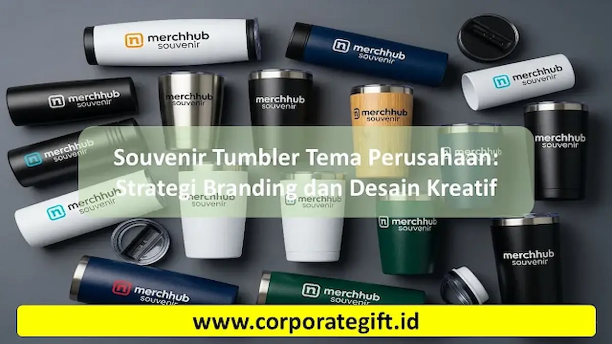

Corporate Gifts ID - Souvenir tumbler adalah botol minum fungsional yang digunakan sebagai alat promosi efektif untuk meningkatkan kesadaran merek (brand awareness) sebuah perusahaan. Dengan sentuhan desain kreatif dan pencetakan logo kustom, tumbler korporat tidak hanya berfungsi sebagai hadiah apresiasi bagi klien serta karyawan, melainkan juga menjadi media branding jangka panjang yang dipakai sehari-hari sekaligus mendukung gerakan ramah lingkungan (eco-friendly).
Poin Kunci Strategi Branding Tumbler:
- Eksposur Berkelanjutan: Digunakan di meja kerja, ruang rapat, maupun perjalanan komuter dengan frekuensi paparan logo tinggi.
- Kredibilitas Merek: Material stainless steel SUS304 berkualitas mencerminkan reputasi korporasi yang profesional dan bonafide.
- Fleksibilitas Desain: Mendukung teknik grafir laser presisi permanen maupun cetak UV warna penuh sesuai identitas brand.
- Dukungan Isu ESG: Pengurangan botol plastik sekali pakai memperkuat citra kepedulian lingkungan perusahaan.
Ulasan ini mengupas tuntas aneka ide desain tumbler tema perusahaan, panduan teknik cetak logo, serta strategi branding agar merchandise promosi dan corporate gift Anda tampil lebih berkelas serta tepat sasaran.
Keunggulan Souvenir Tumbler untuk Strategi Branding Perusahaan
Souvenir tumbler secara konsisten dipilih oleh banyak korporasi multinasional maupun instansi pemerintah karena menawarkan berbagai keunggulan strategis:
- Fungsional dan Digunakan Sehari-hari: Botol minum yang dibawa ke kantor, pusat kebugaran, atau seminar bisnis secara otomatis melipatgandakan visibilitas jenama Anda di hadapan audiens luas.
- Meningkatkan Citra Profesional: Balutan material stainless steel food-grade dengan lapisan matte atau powder coating memberikan impresi mewah yang mengangkat pamor institusi.
- Customisasi Fleksibel dan Presisi: Logo perusahaan, slogan kampanye, dan kode warna korporat dapat diaplikasikan secara presisi pada permukaan badan tumbler.
- Media Promosi Tahan Lama (Long-Lasting): Berbeda dengan merchandise kertas atau plastik tipis, tumbler stainless memiliki masa pakai bertahun-tahun, menjadikan biaya per impresi (cost per impression) sangat ekonomis.
- Mendukung Visi Keberlanjutan (Sustainability): Penggunaan reusable tumbler mengukuhkan komitmen perusahaan terhadap pelestarian alam dan pengurangan sampah plastik sekali pakai.
Rekomendasi Ide Desain Tumbler Tema Perusahaan
Untuk memaksimalkan daya tarik visual dan nilai eksklusivitas, berikut lima inspirasi desain tumbler korporat:
-
Desain Minimalis dan Profesional:
Mengusung warna korporat monokrom (hitam doff, abu-abu charcoal, atau navy) dengan logo monokrom di bagian tengah bawah. Gaya ini sangat pas untuk forum formal seperti Rapat Umum Pemegang Saham (RUPS) dan seminar eksekutif. -
Desain Kreatif dengan Pola Branding:
Memadukan monogram logo dengan elemen pola geometris khas perusahaan di sekeliling tabung tumbler. Sangat efektif untuk menarik perhatian generasi muda dan mitra agensi modern. -
Desain Fun dan Penuh Warna (Colorful):
Menerapkan gradasi warna cerah atau ilustrasi bertema rekreasi. Sangat cocok untuk acara family gathering, outbound karyawan, atau kompetisi olahraga antardivisi. -
Tumbler Limited Edition (Edisi Khusus):
Merchandise perayaan ulang tahun perusahaan (anniversary milestone) dengan nomor seri unik atau grafir penanda tahun berdirinya instansi yang menciptakan rasa bangga bagi pemiliknya. -
Kustomisasi Pesan atau Kutipan Motivasi:
Menyisipkan kutipan inspiratif kepemimpinan atau ucapan terima kasih tulus yang dipersonalisasi bagi jajaran manajerial maupun klien prioritas.

Penerapan teknik grafir laser presisi menghasilkan visual logo permanen yang elegan pada tumbler stainless steel.
Tips Customisasi Tumbler untuk Corporate Event
Agar tumbler promosi berfungsi maksimal sebagai instrumen branding korporat berkelas, terapkan beberapa tips taktis berikut:
- Pilih Material Berkualitas Food-Grade: Gunakan stainless steel SUS304 berdinding ganda (double-wall vacuum insulation) agar sanggup menjaga suhu panas dan dingin hingga 12 jam tanpa kondensasi luar.
- Tentukan Teknik Cetak Logo yang Tepat: Pilih grafir laser (engraving) untuk tampilan metalik mewah yang anti-kelupas permanen, atau UV printing flatbed untuk visual logo multiwarna yang tajam.
- Patuhi Panduan Identitas Visual Brand: Cocokkan warna bodi tumbler dengan palet warna resmi perusahaan berdasarkan panduan brand guidelines.
- Sematkan Personalisasi Nama: Tambahkan nama penerima di sisi berlawanan logo untuk menumbuhkan kedekatan emosional dan mencegah tumbler tertukar di kantor.
- Lengkapi Kemasan Eksklusif: Kemas tumbler di dalam hardbox custom bermagnet dengan pelapis busa beludru dan kartu pesan pembuka untuk menghadirkan pengalaman unboxing yang istimewa.
Tabel Rekomendasi Desain & Karakteristik Tumbler Korporat
Berikut rangkuman perbandingan gaya desain, material, serta peruntukan acara korporat untuk mempermudah pemilihan merchandise:
| Gaya Desain | Material Rekomendasi | Teknik Cetak Logo | Peruntukan Acara |
|---|---|---|---|
| Minimalis Eksekutif | Stainless Steel SUS304 Matte Coating | Laser Engraving (Grafir) | RUPS, Konferensi Bisnis, Klien VIP |
| Kreatif Pattern | Stainless Doff / Kaca Borosilicate | UV Printing Rotary 360 Full Color | Product Launching, Brand Activation |
| Fun & Colorful | Aluminium Ringan / Plastik Bebas BPA | Sablon Presisi High-Density | Family Gathering, Outbound, CSR Event |
| Anniversary Limited | Vacuum Flask dengan Smart Temperature Sensor | Laser Marking + Gold Foil Box | Ulang Tahun Kantor, Cinderamata Direksi |
Pemanfaatan Tumbler untuk Berbagai Acara Perusahaan
Fleksibilitas tumbler menjadikannya media promosi ideal untuk berbagai momentum penting bisnis:
- Seminar dan Workshop Korporat: Menampilkan logo perusahaan, nama seminar, dan tanggal acara sebagai pengingat momen edukasi yang bernilai guna.
- Family Gathering dan Team Building: Menghadirkan desain kasual penuh semangat kolaborasi yang mempererat kekompakan keluarga besar karyawan.
- Corporate Anniversary: Edisi terbatas dengan pesan pencapaian milestone bisnis yang mengapresiasi loyalitas seluruh jajaran kerja.
- Apresiasi Klien Strategis (Client Gift): Menghadirkan tumbler insulasi premium berbalut kotak kemasan mewah dengan sentuhan branding halus yang tidak mencolok.
Dengan menyelaraskan konsep desain tumbler dengan identitas jenama dan tema acara, perusahaan Anda tidak hanya mendistribusikan cenderamata biasa, melainkan menanamkan aset promosi bergerak yang berumur panjang.
FAQ: Pertanyaan Seputar Souvenir Tumbler Tema Perusahaan

Ditulis oleh: Sholikhatun Nikmah
Creative Product Designer & Bespoke Packaging ConsultantSpesialis desain merchandise korporat, kurasi souvenir promosi premium, teknik cetak kustom logo, dan konsultasi kemasan eksklusif di CorporateGifts.ID. Berpengalaman mendampingi ratusan perusahaan dalam memproduksi cinderamata branding fungsional.
Lihat Profil Lengkap & Panduan Lainnya